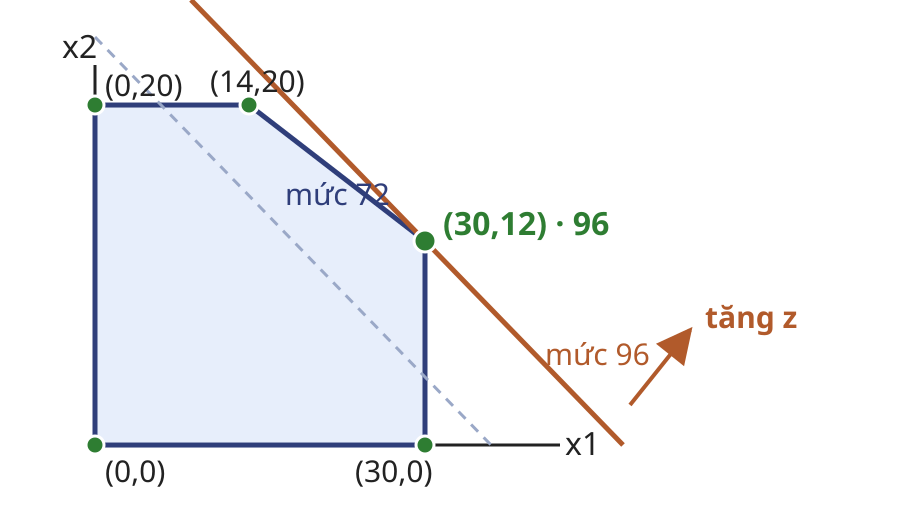
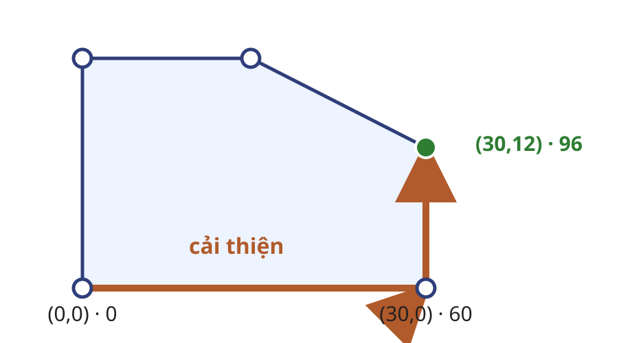

A. Một quyết định thực tế chỉ trở thành bài toán tối ưu khi biến, mục tiêu, giới hạn và đơn vị cùng được xác định.
Quyết định bao nhiêu đơn vị mỗi sản phẩm. Mỗi đơn vị tạo lợi ích tuyến tính. Mỗi nguồn lực tạo một giới hạn tuyến tính. Nhu cầu xuất phát từ bài toán phân bổ tài nguyên. Một danh sách dữ kiện chưa phải mô hình; cần xác định đại lượng nào được lựa chọn và đại lượng nào cố định.
Nguồn: Bertsimas và Tsitsiklis (1997), §1.1.
Ví dụ hộp hạt
Một cơ sở đóng hai loại hộp. Đặt $x_1,x_2$ là sản lượng, tính theo nghìn hộp loại 1 và 2.
Đại lượng Loại 1 Loại 2 Giới hạn Sản lượng (nghìn hộp) $x_1\le30$ $x_2\le20$ — Giờ máy trên nghìn hộp $1$ $2$ $54$ giờ Lợi ích trên nghìn hộp $2$ $3$ cực đại
Miền biến: $x_1,x_2\ge0$. Sản lượng được mô hình hóa liên tục; nếu quyết định là số lô nguyên thì cần quy hoạch nguyên.
Đơn vị nghìn hộp cho phép xem sản lượng là đại lượng liên tục ở mức lập kế hoạch. Các giới hạn $30,20,54$ được dùng xuyên bài. Nếu quyết định thực tế chỉ nhận số lô nguyên, mô hình phải chuyển sang quy hoạch nguyên.
Nguồn: Ví dụ tự tạo theo mô hình sản xuất trong Bertsimas và Tsitsiklis (1997), §1.2.
Ràng buộc từ giới hạn
Nguồn lực chung $$x_1+2x_2\le54$$
Câu hỏi: điểm $(30,20)$ vi phạm giới hạn nào và vượt bao nhiêu đơn vị?
Điểm $(30,20)$ thỏa hai giới hạn riêng nhưng dùng $30+2\cdot20=70$ giờ máy, vượt $16$ giờ. Bài kiểm tra buộc người học đọc hệ số theo đúng đơn vị.
Nguồn: Ví dụ tự tạo; phép tính kiểm tra trực tiếp.
Mục tiêu và phương án ứng viên
$$\max\ z=2x_1+3x_2$$
Phương án Khả thi $z$ $(30,12)$ có $96$ $(14,20)$ có $88$ $(30,20)$ không không so sánh
Chỉ so sánh giá trị mục tiêu giữa các phương án khả thi.
Kiểm tra: $(30,12)$ dùng đúng $54$ giờ máy và cho $2\cdot30+3\cdot12=96$. Điểm $(14,20)$ cũng dùng đúng $54$ giờ nhưng chỉ cho $2\cdot14+3\cdot20=88$. Đây chưa phải chứng minh tối ưu; hình học sẽ cung cấp tập ứng viên hữu hạn.
Nguồn: Ví dụ tự tạo; các đỉnh và giá trị được kiểm tra đại số.
Định nghĩa quy hoạch tuyến tính
Định nghĩa. Một quy hoạch tuyến tính (LP) tối ưu hàm tuyến tính trên miền xác định bởi hữu hạn phương trình và bất phương trình tuyến tính.
$$\max_{x\in\mathbb R^n}\ c^Tx\quad\text{với}\quad Ax\le b,\quad x\ge0.$$
Đầu vào $A,b,c$ và chiều tối ưu.
Đầu ra kết cục và nghiệm tối ưu nếu có.
Ranh giới $x_1x_2$, $x_1^2$ là phi tuyến; điều kiện biến nguyên tạo lớp bài toán khác.
Dạng hiển thị là một quy ước, không phải dạng duy nhất. Hệ số và vế phải là dữ kiện; $x$ là quyết định. Các tích biến hoặc lũy thừa làm mất tính tuyến tính. Điều kiện biến nguyên không làm biểu thức thành phi tuyến, nhưng làm miền quyết định rời rạc và chuyển bài toán sang quy hoạch nguyên.
Nguồn: Bertsimas và Tsitsiklis (1997), §1.1.
Hồi quy với mất mát chuẩn $L_1$
Mất mát bình phương khuếch đại ảnh hưởng của ngoại lai. Chuẩn $L_1$ giảm ảnh hưởng đó nhưng không khả vi, nên ta đưa bài toán về LP.
Cho $a_i\in\mathbb R^n$, $b_i\in\mathbb R$, $x\in\mathbb R^n$. Đặt $t_i\in\mathbb R_+$ để tối thiểu hóa sai số tuyệt đối:
$$-t_i\le a_i^Tx-b_i\le t_i,\qquad i=1,\ldots,m.$$
$$\min_{x,t}\ \sum_{i=1}^m t_i$$
Ví dụ một chiều: $(a_1,b_1)=(1,1)$, $(a_2,b_2)=(1,3)$ cho $\min_x |x-1|+|x-3|$; mọi $x\in[1,3]$ đều tối ưu với giá trị $2$.
Hai bất phương trình buộc $t_i\ge|a_i^Tx-b_i|$. Vì mục tiêu giảm tổng $t_i$, tại tối ưu có dấu bằng. Ví dụ một chiều cho thấy phép chuyển là tương đương và nghiệm không nhất thiết duy nhất.
Nguồn: Bertsimas và Tsitsiklis (1997), §1.3; ví dụ tự tạo.
Bài tập dựng mô hình
Câu hỏi: một hệ thống AI phân bổ thời gian xử lý cho hai luồng. Mỗi đơn vị $x_1,x_2$ cho lợi ích $4,5$; giới hạn $x_1\le8$, $x_2\le6$, $2x_1+x_2\le14$. Hãy viết LP đầy đủ.
Nêu biến và đơn vị. Viết chiều cùng hàm mục tiêu. Viết mọi ràng buộc và miền biến. Kiểm tra điểm $(4,6)$. Đáp án: cực đại $4x_1+5x_2$ với ba giới hạn đã cho và $x\ge0$. Điểm $(4,6)$ khả thi vì $2\cdot4+6=14$; giá trị mục tiêu bằng $46$.
Nguồn: Bài tập tự tạo từ dữ kiện phân bổ tài nguyên.
B. Mô hình đại số cần một hình học chung để mô tả toàn bộ miền khả thi và một dạng chung để liên hệ đỉnh với hệ phương trình.
Giao của các nửa không gian tạo đa diện. Biến phụ chuyển bất phương trình thành phương trình. Nghiệm cơ sở khả thi mã hóa một đỉnh bằng đại số. Mô hình hộp hạt chuyển từ danh sách ràng buộc sang cấu trúc hình học của đa diện. Hàm mục tiêu không quyết định miền khả thi; nó chỉ chọn hướng đường mức.
Nguồn: Bertsimas và Tsitsiklis (1997), §§2.1–2.3.
Đa diện và đường mức

Miền khả thi là phần giao của năm nửa không gian. Đường mức $2x_1+3x_2=\alpha$ song song khi $\alpha$ đổi. Đường mức cuối chạm tại $(30,12)$. Năm đỉnh là $(0,0),(30,0),(30,12),(14,20),(0,20)$. Nét đứt là mức $z=72$; đường đỏ song song là mức $z=96$ và đi qua $(30,12)$. So sánh các đỉnh cho giá trị $0,60,96,88,60$.
Nguồn: Bertsimas và Tsitsiklis (1997), §2.1; hình tự vẽ.
Định nghĩa đa diện
Định nghĩa. Đa diện là tập nghiệm của hữu hạn bất phương trình tuyến tính:
$$P=\{x\in\mathbb R^n:Ax\le b\}.$$
$P$ lồi vì là giao của các nửa không gian lồi. $P$ có thể rỗng, bị chặn hoặc không bị chặn. Đa diện bị chặn không kéo dài vô hạn theo bất kỳ hướng nào.Không đồng nhất “đa diện” với “đa giác bị chặn”. Trong nhiều chiều, đa diện có thể kéo dài vô hạn. Tính lồi cho phép dùng tổ hợp lồi khi định nghĩa điểm cực.
Nguồn: Bertsimas và Tsitsiklis (1997), §2.1.
Dạng chuẩn
Quy ước của bài.
$$\max\ c^Tx\quad\text{với}\quad Ax=b,\quad x\ge0,$$
trong đó $A\in\mathbb R^{m\times n}$ có $\operatorname{rank}(A)=m\le n$ sau khi bỏ các phương trình phụ thuộc.
Đổi cực tiểu thành cực đại bằng $\min c^Tx=-\max(-c^Tx)$.
Có nhiều quy ước “dạng chuẩn” trong tài liệu. Bộ trang chiếu này quy ước dạng phương trình và không âm. Điều kiện hạng đầy đủ theo hàng giúp định nghĩa cơ sở bằng ma trận vuông khả nghịch.
Nguồn: Bertsimas và Tsitsiklis (1997), §2.2.
Biến phụ cho hộp hạt
$$\begin{aligned}x_1+s_1&=30,\\x_2+s_2&=20,\\x_1+2x_2+s_3&=54,\\x_1,x_2,s_1,s_2,s_3&\ge0.\end{aligned}$$
Ý nghĩa $s_i$ là phần giới hạn thứ $i$ chưa dùng.
Ví dụ Tại $(30,12)$: $(s_1,s_2,s_3)=(0,8,0)$.
Hai phép đổi khác: $a^Tx\ge b\Rightarrow a^Tx-s=b$, $s\ge0$; biến tự do viết $x=x^+-x^-$ với $x^+,x^-\ge0$.
Mỗi bất phương trình kiểu “nhỏ hơn hoặc bằng” nhận một biến phụ không âm. Với bất phương trình “lớn hơn hoặc bằng”, dấu của biến dư phải được xử lý tương ứng.
Nguồn: Bertsimas và Tsitsiklis (1997), §2.2; ví dụ tự tạo.
Nghiệm cơ sở khả thi
Với $P=\{x:Ax=b,x\ge0\}$ và $\operatorname{rank}(A)=m$, chọn $B\subset\{1,\ldots,n\}$, $|B|=m$.
$A_B$ phải khả nghịch. Đặt $x_N=0$ với $N=B^c$. Tính $x_B=A_B^{-1}b$. Nghiệm là cơ sở khả thi khi $x_B\ge0$. Nghiệm cơ sở khả thi suy biến khi ít nhất một thành phần của $x_B$ bằng $0$; nhiều cơ sở có thể biểu diễn cùng một điểm.
Điều kiện $m\le n$ và hạng hàng đầy đủ là cần để chọn ma trận cơ sở vuông khả nghịch, nhưng chưa đủ cho tính khả thi. Phải kiểm $A_B^{-1}b\ge0$.
Nguồn: Bertsimas và Tsitsiklis (1997), §§2.2–2.3.
Nghiệm cơ sở của bài hộp hạt
Câu hỏi: với thứ tự cột $(x_1,x_2,s_1,s_2,s_3)$, tại đỉnh $(30,12)$ hãy kiểm cơ sở chỉ số $B=\{1,2,4\}$, tương ứng $\{x_1,x_2,s_2\}$.
$$A_B=\begin{bmatrix}1&0&0\\0&1&1\\1&2&0\end{bmatrix},\qquad b=\begin{bmatrix}30\\20\\54\end{bmatrix}.$$
Kiểm $\det(A_B)\ne0$. Đặt $s_1=s_3=0$. Giải $A_B(x_1,x_2,s_2)^T=b$ và kiểm không âm. Ta có $\det(A_B)=-2\ne0$. Nghiệm cơ sở là $(x_1,x_2,s_2)=(30,12,8)$; cùng $s_1=s_3=0$, toàn bộ véc-tơ không âm. Vì vậy đây là nghiệm cơ sở khả thi của chính ví dụ xuyên bài, không phải một hệ rời rạc mới.
Nguồn: Bài tập tự tạo theo Bertsimas và Tsitsiklis (1997), §2.2.
C. Miền khả thi có vô số điểm. Hình học điểm cực thu hẹp nơi cần tìm, nhưng chỉ dưới các giả thiết được nêu rõ.
Định nghĩa hình học bằng tổ hợp lồi. Đặc trưng đại số bằng nghiệm cơ sở khả thi. Bảo đảm tồn tại và tối ưu tại điểm cực. Đây là bước nối từ hình học sang thuật toán. Không phát biểu “mọi nghiệm tối ưu đều là đỉnh”; khi mục tiêu song song với một cạnh, cả cạnh có thể tối ưu.
Nguồn: Bertsimas và Tsitsiklis (1997), §§2.3–2.5.
Định nghĩa hình học của điểm cực
Định nghĩa. $v\in P$ là điểm cực nếu
$$v=\lambda y+(1-\lambda)z,\quad y,z\in P,\quad 0<\lambda<1$$
chỉ có thể xảy ra khi $y=z=v$.
Điểm nằm trong đoạn thẳng không tầm thường của $P$ không phải điểm cực.
Điều kiện $0<\lambda<1$ loại hai đầu mút của tổ hợp. Trên đa giác hai chiều, điểm cực chính là đỉnh theo trực giác; định nghĩa vẫn đúng trong nhiều chiều.
Nguồn: Bertsimas và Tsitsiklis (1997), §2.3.
Đặc trưng đại số
Định lý. Với $P=\{x:Ax=b,x\ge0\}$, $x\in P$ và $\operatorname{rank}(A)=m$, các mệnh đề sau tương đương:
$x$ là điểm cực của $P$; $x$ là nghiệm cơ sở khả thi; các cột $A_j$ ứng với $x_j>0$ độc lập tuyến tính. Một điểm cực có nhiều nhất $m$ thành phần dương.
Điểm suy biến có thể có ít hơn $m$ thành phần dương và tương ứng với nhiều cơ sở. Định lý chỉ áp dụng sau khi đã khóa dạng chuẩn và hạng hàng đầy đủ.
Nguồn: Bertsimas và Tsitsiklis (1997), §2.3.
Ví dụ nhiều nghiệm tối ưu
$$\min\ -x_1-x_2\quad\text{với}\quad x_1+x_2\le2,\quad x_1,x_2\ge0.$$
Điểm cực $(0,0)$, $(2,0)$, $(0,2)$.
Tập nghiệm tối ưu Mọi điểm trên $x_1+x_2=2$, $x\ge0$.
Có điểm cực tối ưu, nhưng điểm $(1,1)$ tối ưu mà không phải điểm cực.
Giá trị nhỏ nhất là $-2$. Ví dụ phân biệt phát biểu đúng “tồn tại một điểm cực tối ưu” với phát biểu sai “mọi nghiệm tối ưu đều là điểm cực”.
Nguồn: Ví dụ tự tạo theo Bertsimas và Tsitsiklis (1997), §2.5.
Bảo đảm tồn tại điểm cực
Phát biểu Giả thiết Kết luận Định lý $P$ là đa diện không rỗng $P$ có điểm cực $\Leftrightarrow$ $P$ không chứa đường thẳng Hệ quả dạng chuẩn $P=\{x:Ax=b,x\ge0\}$ không rỗng $P$ có ít nhất một điểm cực
$$P=\{x:Ax=b,\ x\ge0\},\ x\in P:\quad x+td\in P\ \forall t\in\mathbb R\Longrightarrow d=0.$$
Mục tiêu chứng minh: xác định khi một đa diện không rỗng có điểm cực và suy ra bảo đảm cho dạng chuẩn.
Ý tưởng: một hướng đường thẳng hai phía ngăn mọi điểm là điểm cực; chiều ngược lại dùng cấu trúc hữu hạn của đa diện không chứa đường thẳng để thu được một điểm cực.
Các bước: nếu đa diện chứa đường $x+td$, thì hướng $d\ne0$ thuộc không gian đường của đa diện; do đó với mọi $y\in P$, cả $y-d$ và $y+d$ đều thuộc $P$, nên $y$ không thể là điểm cực. Định lý đa diện cho chiều đảo. Với hệ quả dạng chuẩn, điều kiện $x+td\ge0$ cho cả $t$ dương lẫn âm buộc $d=0$.
Điểm dùng giả thiết: tính không rỗng cần để kết luận tồn tại; cấu trúc đa diện hữu hạn cần cho chiều đảo; điều kiện $x\ge0$ loại mọi đường thẳng trong hệ quả.
Nguồn: Bertsimas và Tsitsiklis (1997), §2.4.
Điểm cực tối ưu và đỉnh kề
Định lý. Cho đa diện $P$ có ít nhất một điểm cực. Nếu $\max_{x\in P}c^Tx$ có giá trị tối ưu hữu hạn, thì có một điểm cực tối ưu.
Bổ đề cầu nối. Cho $P$ có điểm cực và $\max_{x\in P}c^Tx$ có giá trị tối ưu hữu hạn. Nếu điểm cực $v$ chưa tối ưu, thì tồn tại điểm cực $w$ kề $v$ sao cho $c^Tw>c^Tv$.
Mục tiêu chứng minh: chỉ ra rằng kiểm các đỉnh kề đủ để phát hiện một đỉnh chưa tối ưu và suy ra tồn tại đỉnh tối ưu.
Ý tưởng: nón tiếp xúc tại $v$ được sinh bởi các hướng cạnh và các hướng suy thoái. Nếu có điểm tốt hơn, một hướng sinh phải cải thiện mục tiêu.
Các bước: lấy $x\in P$ với $c^Tx>c^Tv$, nên $d=x-v$ thuộc nón tiếp xúc và $c^Td>0$. Phân rã $d$ theo các hướng cạnh và hướng suy thoái. Giá trị tối ưu hữu hạn buộc $c^Tr\le0$ với mọi hướng suy thoái $r$; do đó ít nhất một hướng cạnh có tích vô hướng dương và dẫn đến điểm cực kề $w$ với $c^Tw>c^Tv$. Đa diện có hữu hạn điểm cực, nên các bước cải thiện nghiêm ngặt phải dừng ở một điểm cực tối ưu.
Điểm dùng giả thiết: “có điểm cực” loại đường thẳng và cho các hướng cạnh; “giá trị tối ưu hữu hạn” loại hướng suy thoái cải thiện. Suy biến có thể làm nhiều cơ sở biểu diễn cùng một điểm và gây quay vòng khi pivot, nhưng không làm mất sự tồn tại của điểm cực kề cải thiện.
Nguồn: Bertsimas và Tsitsiklis (1997), §§2.4–2.5.
Bốn kết cục của quy hoạch tuyến tính
Bốn kết cục dùng trong bài: không khả thi, tức miền khả thi rỗng; khả thi nhưng giá trị mục tiêu không bị chặn theo chiều tối ưu; có giá trị tối ưu hữu hạn với nghiệm duy nhất; có giá trị tối ưu hữu hạn với nhiều nghiệm. Trong hai trường hợp hữu hạn, ít nhất một điểm cực tối ưu tồn tại dưới dạng chuẩn.
Nguồn: Bertsimas và Tsitsiklis (1997), §§1.1, 2.5; hình tự vẽ.
Mô tả thuật toán ở mức ý niệm
Đầu vào: đa diện $P$ có điểm cực, $\max_{x\in P}c^Tx$ có giá trị tối ưu hữu hạn và một điểm cực xuất phát.Tại điểm cực hiện tại, tìm một điểm cực kề có giá trị mục tiêu cải thiện nghiêm ngặt. Chuyển sang điểm cực kề đó. Dừng: khi không còn điểm cực kề cải thiện; theo bổ đề đỉnh kề, điểm hiện tại tối ưu.Trên bài hộp hạt: $(0,0)\to(30,0)\to(30,12)$, với $z:0\to60\to96$.
Chuỗi số cụ thể cho thấy mỗi bước giữ khả thi và cải thiện nghiêm ngặt. Điều kiện đầu vào khớp bổ đề đỉnh kề: đa diện phải có điểm cực và mục tiêu phải có giá trị tối ưu hữu hạn. Suy biến không làm sai tiêu chuẩn dừng ở mức đồ thị đỉnh; khó khăn xuất hiện khi một quy tắc pivot đi qua nhiều cơ sở của cùng một đỉnh và có thể quay vòng. Cách tìm điểm cực xuất phát, chọn cạnh và chống quay vòng thuộc phương pháp đơn hình ở Bài 08.
Nguồn: Đề cương UET.AI2012, Chương 10.6; Bertsimas và Tsitsiklis (1997), §2.5; phép tính từ ví dụ hộp hạt.
Đường đi qua các đỉnh kề

$(0,0)$: $z=0$. $(30,0)$: $z=60$. $(30,12)$: $z=96$, tối ưu. Đây là đường đi cụ thể trên đúng đa diện hộp hạt. Hai đoạn được tô đậm là hai cạnh của miền khả thi. Hình không mô tả phép pivot; nó chỉ cung cấp trực giác hình học cho bước “đỉnh kề cải thiện”.
Nguồn: Bertsimas và Tsitsiklis (1997), §2.5; hình tự vẽ từ dữ kiện hộp hạt.
Bài tập chuyển giao về điểm cực
Câu hỏi: xét $\max x_1+x_2$ với $x_1+2x_2\le4$, $3x_1+x_2\le6$, $x\ge0$.
Kiểm tra bốn đỉnh $(0,0),(2,0),(1{,}6,1{,}2),(0,2)$. Tính mục tiêu và phân loại kết cục. Cho một đường đỉnh kề cải thiện từ $(0,0)$. Nêu định lý được dùng và đầy đủ giả thiết. Các giá trị mục tiêu lần lượt là $0,2,2{,}8,2$. Đường hợp lệ: $(0,0)\to(2,0)\to(1{,}6,1{,}2)$ với giá trị $0\to2\to2{,}8$. Miền là đa diện có các điểm cực đã liệt kê và mục tiêu có giá trị tối ưu hữu hạn; vì vậy định lý điểm cực tối ưu áp dụng. Nghiệm tối ưu duy nhất là $(1{,}6,1{,}2)$.
Nguồn: Bài tập tự tạo từ một đa diện hai chiều.
Bài tập tích hợp quy hoạch tuyến tính
Câu hỏi: với bài hộp hạt, hãy hoàn tất chuỗi lập luận.
Viết LP và dạng chuẩn có biến phụ. Liệt kê năm đỉnh và giá trị mục tiêu. Phân loại kết cục của bài toán. Nêu định lý bảo đảm có điểm cực tối ưu. Nêu đỉnh xuất phát, bước sang đỉnh kề cải thiện và tiêu chuẩn dừng. Đáp án chính: các đỉnh có giá trị $0,60,96,88,60$; bài toán hữu hạn với nghiệm tối ưu duy nhất $(30,12)$. Mô tả ở mức ý niệm bắt đầu từ một đỉnh khả thi, chuyển qua đỉnh kề cải thiện nghiêm ngặt và dừng khi không còn đỉnh kề cải thiện. Bài tập khép phần LP trước khi đổi đối tượng sang chuỗi quyết định.
Nguồn: Bài tập tích hợp từ ví dụ hộp hạt.
D. LP: một véc-tơ quyết định Cấu trúc đa diện thu hẹp việc tìm kiếm về các điểm cực và cơ sở.
DP: một chuỗi quyết định Trạng thái thu hẹp việc tìm kiếm bằng cách dùng lại các bài toán con.
Phạm vi DP: chân trời hữu hạn, trạng thái và điều khiển hữu hạn, chuyển trạng thái tất định, chi phí cộng.
Đây là phép so sánh hai cơ chế khai thác cấu trúc, không phải phát biểu LP và DP tương đương. LP dùng hình học đa diện của một véc-tơ quyết định; DP dùng trạng thái để tái sử dụng chi phí còn lại của một chuỗi quyết định.
Nguồn: Đề cương UET.AI2012; MIT 15.093J, Bài 16.
Nhu cầu của quyết định nhiều giai đoạn
Trạng thái hiện tại
→
Quyết định
→
Trạng thái kế
→
Chi phí còn lại
Liệt kê vét cạn mọi chuỗi quyết định sẽ giải lặp lại nhiều bài toán con giống nhau.
Quy hoạch động khai thác cấu trúc con tối ưu: một trạng thái phải lưu đủ thông tin ảnh hưởng đến tương lai, nhưng bỏ chi tiết quá khứ không còn liên quan.
Nguồn: MIT 15.093J, Bài 16, trang 6–9.
Ví dụ đường đi theo tầng
Tính ngược: $J(C)=3$ và $J(D)=1$. Tại $A$, chọn $D$ vì $2+1=3$ nhỏ hơn $4+3=7$. Tại $B$, hai lựa chọn cùng cho $4$: $1+3=3+1=4$. Tại $s$, chọn $A$ vì $2+3=5$ nhỏ hơn $5+4=9$. Đường tối ưu là $s\to A\to D\to t$.
Nguồn: Ví dụ và hình tự tạo theo khuôn đồ thị tầng của MIT 15.093J, Bài 16.
Phương trình Bellman hữu hạn tất định
Quyết định được chọn ở $k=0,\ldots,N-1$; giai đoạn $N$ chỉ mang chi phí cuối. Với trạng thái $x_k$, điều khiển $u\in U_k(x_k)$ và $x_{k+1}=f_k(x_k,u)$:
$$J_N(x)=g_N(x),\qquad J_k(x)=\min_{u\in U_k(x)}\left\{g_k(x,u)+J_{k+1}(f_k(x,u))\right\}.$$
Trong phạm vi bài, $U_k(x)$ hữu hạn và không rỗng nên giá trị nhỏ nhất được đạt.
Không mở rộng sang điều khiển liên tục, vô hạn ngẫu nhiên hoặc chân trời vô hạn. Trong đồ thị tầng, mỗi tập cạnh đi ra là hữu hạn; vì vậy phép lấy min chọn được ít nhất một cạnh.
Nguồn: MIT 15.093J, Bài 16, trang 7–9.
Quy trình giải ngược
Đầu vào: chân trời $N$, trạng thái, tập điều khiển không rỗng, chuyển trạng thái và chi phí cộng.Khởi tạo $J_N=g_N$. Với $k=N-1,\ldots,0$, tính $J_k$ bằng Bellman và lưu một điều khiển đạt min. Đầu ra: $J_0(x_0)$ và chính sách tối ưu.Số cặp trạng thái–điều khiển được duyệt là $\sum_{k=0}^{N-1}\sum_{x\in X_k}|U_k(x)|$; bảng Bellman dùng lại mỗi bài toán con thay vì duyệt mọi chuỗi.
Trong đồ thị tầng, trạng thái là nút hiện tại, điều khiển là cạnh đi ra và chi phí giai đoạn là trọng số cạnh. Tính bảng từ tầng cuối về đầu tránh giải lại cùng bài toán con.
Nguồn: MIT 15.093J, Bài 16, trang 6–9.
Bài tập chuyển giao Bellman
Câu hỏi: giữ đồ thị ví dụ đường đi theo tầng nhưng đổi $c(s,B)=3$ và $c(C,t)=0$. Các cạnh khác giữ nguyên. Hãy tính lại mọi $J$ và nêu đường tối ưu.
Tầng Phép tính cần lập $C,D$ chi phí mới đến $t$ $A,B$ min qua $C,D$ $s$ min qua $A,B$ và tái tạo đường
Đáp án: $J(C)=0$, $J(D)=1$, $J(A)=\min\{4+0,2+1\}=3$, $J(B)=\min\{1+0,3+1\}=1$, $J(s)=\min\{2+3,3+1\}=4$. Đường tối ưu mới là $s\to B\to C\to t$. Đây là dữ kiện mới, nên người học phải tái tạo Bellman thay vì chép kết quả của ví dụ trước.
Nguồn: Bài tập chuyển giao tự tạo theo MIT 15.093J, Bài 16.